<!DOCTYPE lake>
<p data-lake-id="u05b570b8" id="u05b570b8"><br/></p><h1 data-lake-id="ywIRL" data-lake-index-type="2" id="ywIRL"><span data-lake-id="u9b0b4639" id="u9b0b4639">安装VS CODE</span></h1><h2 data-lake-id="DmEqi" id="DmEqi"><span data-lake-id="u6fd0b815" id="u6fd0b815">1.1 打开</span><a data-lake-id="uf75be3f3" href="https://code.visualstudio.com/" id="uf75be3f3" rel="noopener noreferrer" target="_blank"><span data-lake-id="u11da41f2" id="u11da41f2">vs code官网</span></a></h2><p data-lake-id="u9b9fc133" id="u9b9fc133">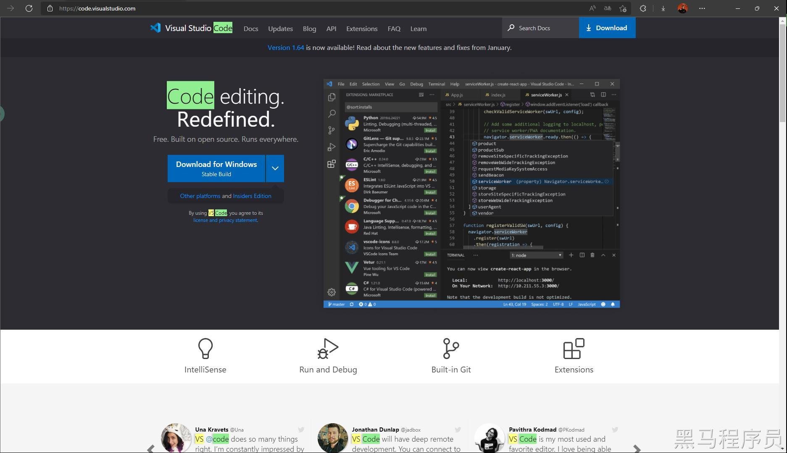</p><h2 data-lake-id="riuVP" id="riuVP"><span data-lake-id="u9c1d8852" id="u9c1d8852">1.2 点击下载</span></h2><p data-lake-id="uab8d8fec" id="uab8d8fec">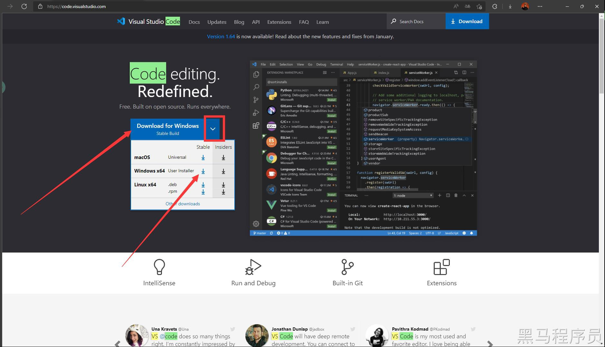<span class="lake-fontsize-12" data-lake-id="u6ed831e6" id="u6ed831e6"><br/></span><span class="lake-fontsize-12" data-lake-id="ufbdaa3cb" id="ufbdaa3cb">可以直接点击Download ，或者下拉选择适合你操作系统的文件。<br/><br/><br/></span></p><h2 data-lake-id="TOLb1" id="TOLb1"><span data-lake-id="ue8d10c30" id="ue8d10c30">1.3 进行安装</span></h2><h3 data-lake-id="FmFfF" id="FmFfF"><span data-lake-id="u3e40684e" id="u3e40684e">1.3.1 双击下载好的文件</span></h3><h3 data-lake-id="jVRpK" id="jVRpK"><span data-lake-id="u1e25b502" id="u1e25b502">1.3.2 选择【我同意此协议】，单击【下一步】</span></h3><p data-lake-id="u68e0b7eb" id="u68e0b7eb">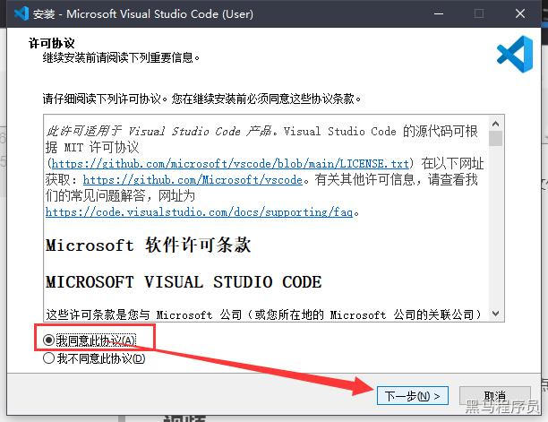</p><h3 data-lake-id="iR6kJ" id="iR6kJ"><span data-lake-id="u1b4c9d16" id="u1b4c9d16">1.3.3 其他的复选框全部勾选【细节】</span></h3><p data-lake-id="ucef1c98a" id="ucef1c98a">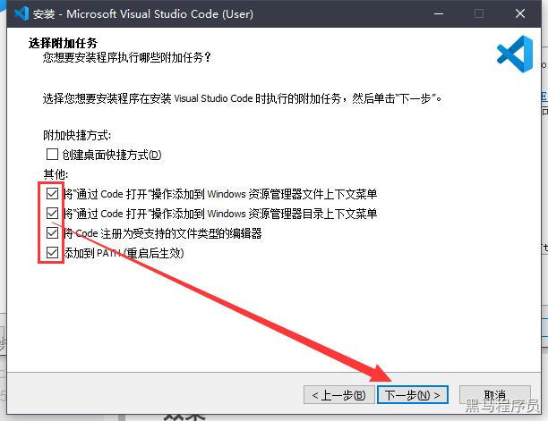<span class="lake-fontsize-12" data-lake-id="u06044710" id="u06044710"><br/></span><span class="lake-fontsize-12" data-lake-id="ue7608df0" id="ue7608df0">前两个方便我们打开文件夹：<br/></span><span class="lake-fontsize-12" data-lake-id="ufc32486b" id="ufc32486b">比如现在我们有一个keil工程，需要用vs code编辑，如果勾选了前两项的话，可以直接再keil工程所在文件夹空白处右键，右键菜单上就会有【通过 code 打开】之类的选项，选择这个选项后vs code就会打开这个文件夹，方便得很；<br/></span><span class="lake-fontsize-12" data-lake-id="uc5c70794" id="uc5c70794">如果没有勾选，就需要先打开vs code，然后在菜单栏上选择【文件】，然后点击【打开文件夹】，然后再一级一级找到你需要打开的文件夹。<br/></span><span class="lake-fontsize-12" data-lake-id="u4729e57c" id="u4729e57c">舒适程度显而易见的嘛！<br/><br/><br/></span></p><h3 data-lake-id="vvGc9" id="vvGc9"><span data-lake-id="uae22a1f1" id="uae22a1f1">1.3.4 单击【安装】</span></h3><p data-lake-id="ufb9925d7" id="ufb9925d7">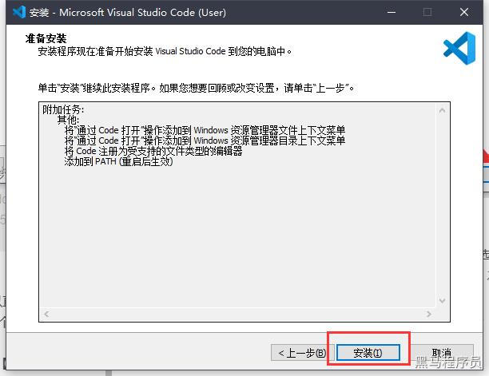</p><h3 data-lake-id="yQQdq" id="yQQdq"><span data-lake-id="u52e547a2" id="u52e547a2">1.3.5 等待安装完成即可</span></h3><p data-lake-id="u445fc486" id="u445fc486"><span data-lake-id="u83d22c38" id="u83d22c38"><br/><br/></span></p><h1 data-lake-id="M7uq9" data-lake-index-type="2" id="M7uq9"><span data-lake-id="u66a96ff5" id="u66a96ff5">安装keil</span></h1><h1 data-lake-id="eFwMI" data-lake-index-type="2" id="eFwMI"><span data-lake-id="u1b4e7f70" id="u1b4e7f70">“安装”MinGW</span></h1><p data-lake-id="ua84b53b5" id="ua84b53b5"><span data-lake-id="ud030f52b" id="ud030f52b">如果你的c可以在vscode中运行，则可以跳过此步骤！</span></p><h2 data-lake-id="AWGgR" data-lake-index-type="2" id="AWGgR"><span data-lake-id="u4c37d1b8" id="u4c37d1b8">下载集成环境安装包</span></h2><p data-lake-id="uad34e657" id="uad34e657"><br/></p><p data-lake-id="u168fc964" id="u168fc964"><span data-lake-id="u8dd07de3" id="u8dd07de3">从网盘中下载</span><span class="lake-fontsize-12" data-lake-id="ucb027c7f" id="ucb027c7f" style="color: rgb(55, 65, 81); background-color: rgb(247, 247, 248)">MinGW之后，解压，然后将它的路径配置到系统的环境变量中</span></p><p data-lake-id="u43cb88ec" id="u43cb88ec"><span data-lake-id="uf34939e1" id="uf34939e1">链接：</span><a data-lake-id="u69ed65d7" href="https://pan.baidu.com/s/1QjK4r-I3xIfSnTMZyf5-lQ?pwd=6666" id="u69ed65d7" rel="noopener noreferrer" target="_blank"><span data-lake-id="u456166ad" id="u456166ad">https://pan.baidu.com/s/1QjK4r-I3xIfSnTMZyf5-lQ?pwd=6666</span></a></p><p data-lake-id="u6b43bd41" id="u6b43bd41"><span data-lake-id="u5727c0f4" id="u5727c0f4">提取码：6666</span></p><p data-lake-id="u240d735a" id="u240d735a"><span data-lake-id="uead5dd67" id="uead5dd67">找到</span><code data-lake-id="uaa625bb7" id="uaa625bb7"><span data-lake-id="u4d92d9a9" id="u4d92d9a9">mingw64.zip</span></code></p><h2 data-lake-id="H0y7A" data-lake-index-type="2" id="H0y7A"><span data-lake-id="uf9e259b1" id="uf9e259b1">配置环境路径</span></h2><p data-lake-id="u6953e902" id="u6953e902"><span data-lake-id="u8f73c2df" id="u8f73c2df">确认好解压出的包含gcc.exe的路径，我这里示例为：</span><code data-lake-id="u5ac1bd6f" id="u5ac1bd6f"><span data-lake-id="u4ccfd004" id="u4ccfd004">D:\Develop\mingw64\bin</span></code></p><p data-lake-id="u5d46977b" id="u5d46977b">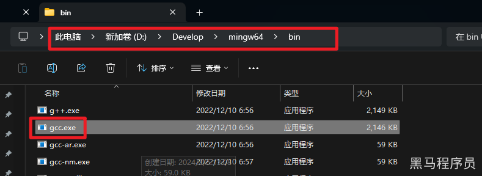</p><p data-lake-id="u6de3b160" id="u6de3b160"><span data-lake-id="ue8078f20" id="ue8078f20">此电脑，右键属性</span></p><p data-lake-id="u185bea3c" id="u185bea3c">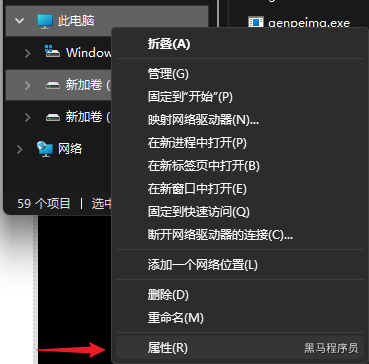</p><p data-lake-id="u4292da52" id="u4292da52"><span data-lake-id="ud7de7b6f" id="ud7de7b6f">找到系统变量设置</span></p><p data-lake-id="u18166d53" id="u18166d53">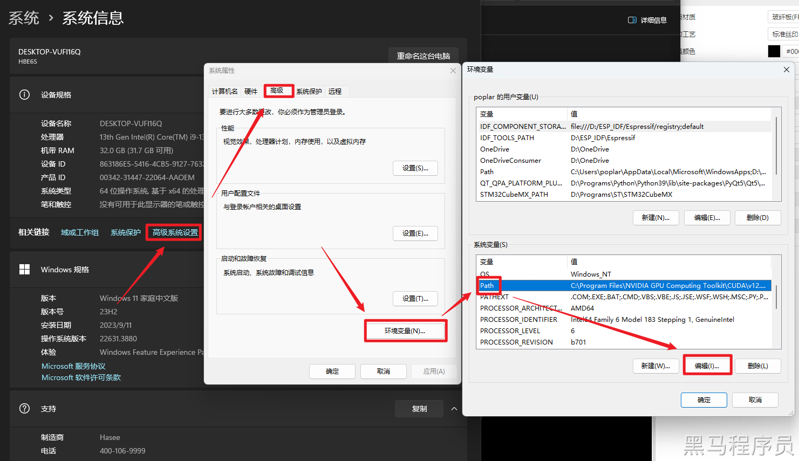</p><p data-lake-id="u0dfe4a8f" id="u0dfe4a8f"><span data-lake-id="u243df5fa" id="u243df5fa">新建-粘贴路径-确定</span></p><p data-lake-id="ub4528ff7" id="ub4528ff7">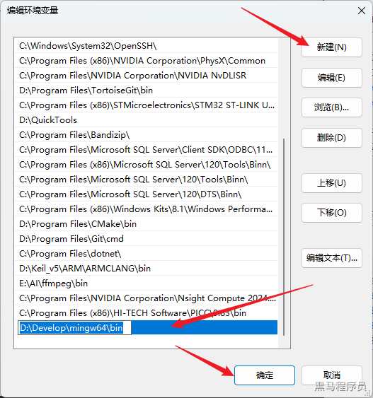</p><p data-lake-id="ue050de44" id="ue050de44"><span data-lake-id="u852c8b4a" id="u852c8b4a">最后再点一下确定</span></p><p data-lake-id="u161545c7" id="u161545c7">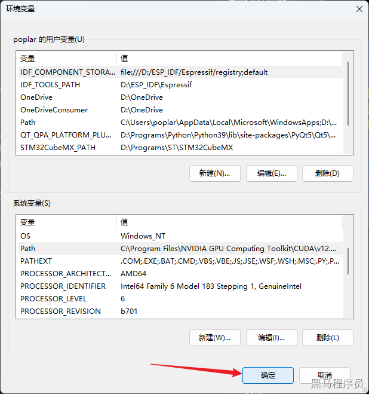</p><h2 data-lake-id="FXFOo" data-lake-index-type="2" id="FXFOo"><span data-lake-id="u31f71f0c" id="u31f71f0c">成功验证</span></h2><p data-lake-id="u3fdf9dc1" id="u3fdf9dc1"><span data-lake-id="u438ce82a" id="u438ce82a" style="color: rgba(0, 0, 0, 0.87)">安装好之后，打开控制台，输入</span><code data-lake-id="u378d96fd" id="u378d96fd"><span data-lake-id="uba1b925b" id="uba1b925b" style="color: rgba(0, 0, 0, 0.87)">gcc -v</span></code><span data-lake-id="uf4240cdd" id="uf4240cdd" style="color: rgba(0, 0, 0, 0.87)">。输出内容类似下方，即为成功：</span></p><p data-lake-id="uca352013" id="uca352013">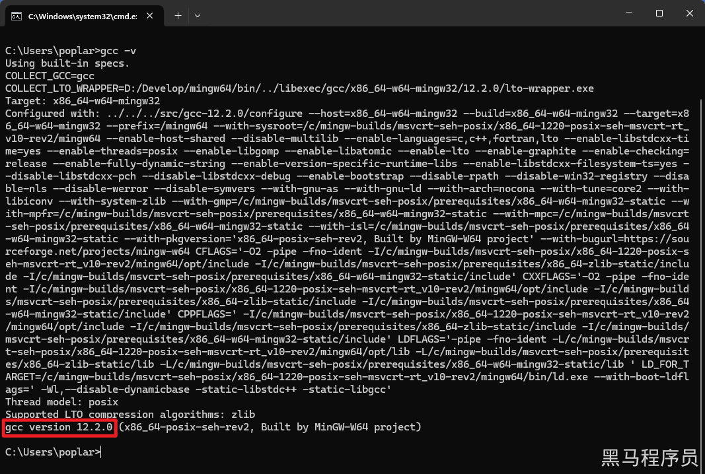</p><p data-lake-id="ua5939fc9" id="ua5939fc9"><span data-lake-id="uf63f4e86" id="uf63f4e86">如果有多个版本gcc，可以把自己的路径放在其他路径上边。查看方式：在cmd里执行</span><code data-lake-id="u34be268a" id="u34be268a"><span data-lake-id="ubf3e1c6b" id="ubf3e1c6b">where gcc</span></code></p><p data-lake-id="u36940e1a" id="u36940e1a">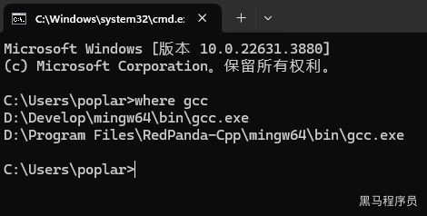</p><h1 data-lake-id="oPGoS" data-lake-index-type="2" id="oPGoS"><span data-lake-id="ufaaadf16" id="ufaaadf16">安装vs code插件</span></h1><h2 data-lake-id="mthfQ" id="mthfQ"><span data-lake-id="ue313849f" id="ue313849f">4.0 如何安装插件</span></h2><h2 data-lake-id="Q0gXf" id="Q0gXf"><span data-lake-id="u58d7fbad" id="u58d7fbad">4.0.1 打开vs code</span></h2><h2 data-lake-id="lIyzK" id="lIyzK"><span data-lake-id="u0b6eccea" id="u0b6eccea">4.0.2 点击侧边的扩展按钮</span></h2><p data-lake-id="uc4b2b5d1" id="uc4b2b5d1">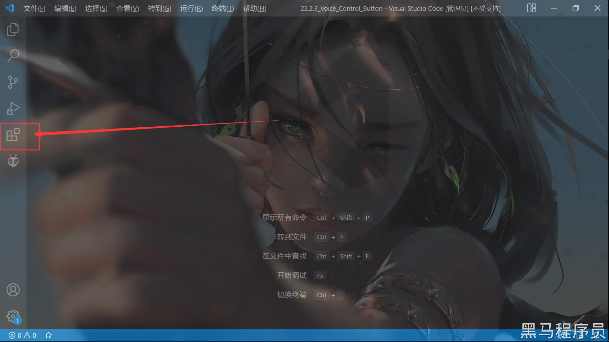</p><h2 data-lake-id="AaJVN" id="AaJVN"><span data-lake-id="u4a1a4230" id="u4a1a4230">4.0.3 输入扩展名关键字，点击安装</span></h2><p data-lake-id="u60291b2a" id="u60291b2a">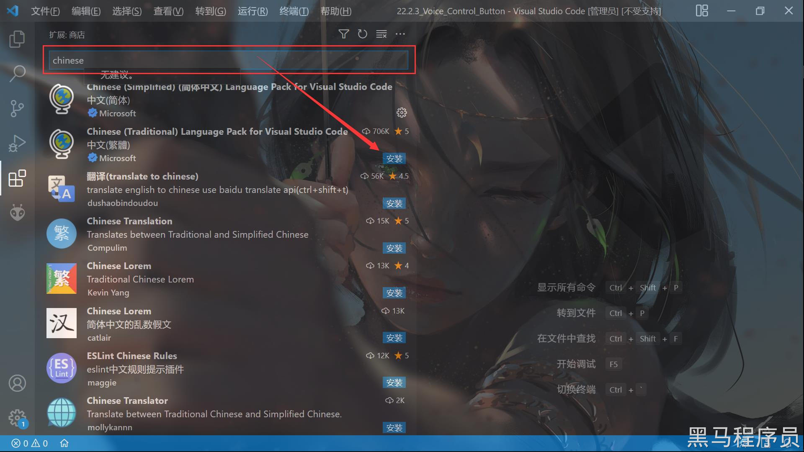</p><h2 data-lake-id="ZuKO5" id="ZuKO5"><span data-lake-id="u3c169978" id="u3c169978">4.1 汉化插件</span></h2><p data-lake-id="u30d5b3e6" id="u30d5b3e6"><span class="lake-fontsize-12" data-lake-id="ua829df23" id="ua829df23">名称：Chinese (Simplified) (简体中文) Language Pack for Visual Studio Code<br/></span><span class="lake-fontsize-12" data-lake-id="u35b0257f" id="u35b0257f">（其实只要搜Chinese即可，点那个安装量最多的总没错）<br/></span>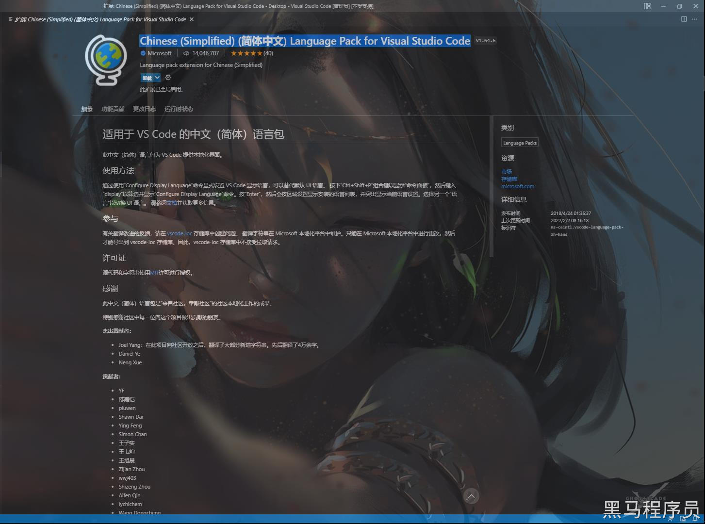</p><h2 data-lake-id="t73OP" id="t73OP"><span data-lake-id="ub5b01609" id="ub5b01609">4.2 C语言支持</span></h2><p data-lake-id="u45921f3e" id="u45921f3e"><span class="lake-fontsize-12" data-lake-id="u68d5f3ef" id="u68d5f3ef">名称：C/C++<br/></span>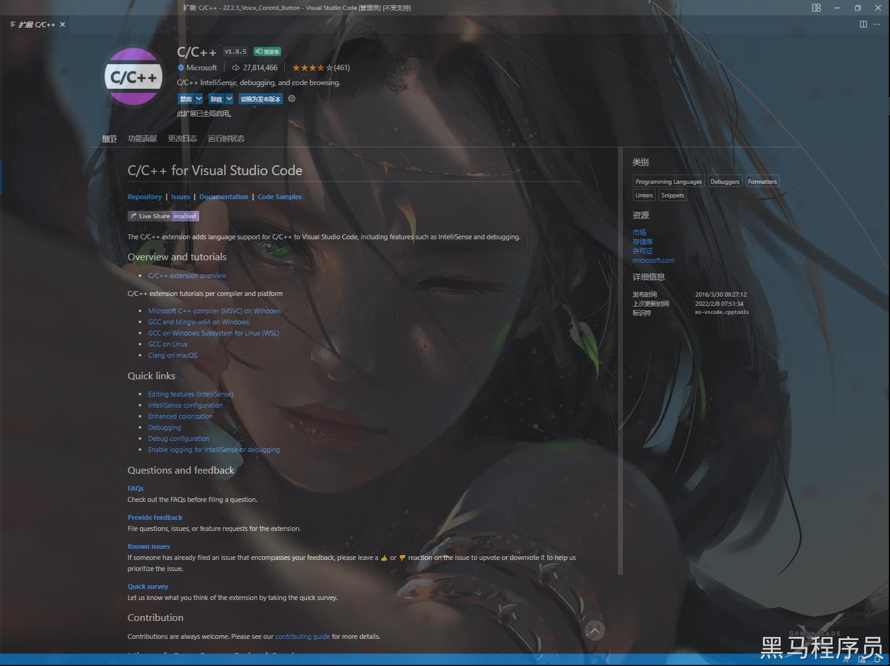<span class="lake-fontsize-12" data-lake-id="uec4f05f2" id="uec4f05f2"><br/></span><strong><span class="lake-fontsize-12" data-lake-id="uc8b61b86" id="uc8b61b86">vs code本身是不支持C语言的，但是它支持插件啊！</span></strong></p><p data-lake-id="u05be3f8e" id="u05be3f8e"><strong><span class="lake-fontsize-12" data-lake-id="u24ce60ee" id="u24ce60ee">直接装</span></strong><code data-lake-id="ua725753d" id="ua725753d"><strong><span class="lake-fontsize-12" data-lake-id="u8f0b0a1f" id="u8f0b0a1f">C/C++ Extension Pack</span></strong></code><strong><span class="lake-fontsize-12" data-lake-id="ue9d1ff86" id="ue9d1ff86">插件，可包含此插件</span></strong></p><h2 data-lake-id="hw6IW" id="hw6IW"><span data-lake-id="u02d37b4f" id="u02d37b4f">4.3 keil工程支持</span></h2><p data-lake-id="uc0d92a59" id="uc0d92a59"><span class="lake-fontsize-12" data-lake-id="u1cc02e0e" id="u1cc02e0e">名称：Keil Assistant<br/></span><span class="lake-fontsize-12" data-lake-id="u27e6502c" id="u27e6502c">链接：</span><a data-lake-id="u465717b2" href="https://marketplace.visualstudio.com/items?itemName=CL.keil-assistant" id="u465717b2" rel="noopener noreferrer" target="_blank"><span data-lake-id="u66a2a61b" id="u66a2a61b">Keil Assistant</span></a><span class="lake-fontsize-12" data-lake-id="u543a0ffa" id="u543a0ffa"><br/></span>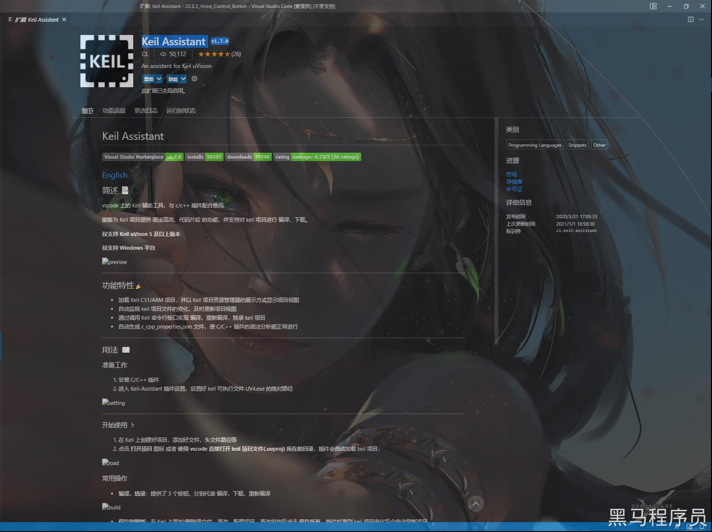</p><p data-lake-id="u354ba8ba" id="u354ba8ba"><span data-lake-id="u0e0067ac" id="u0e0067ac">在详情页点击小齿轮，点击扩展设置</span></p><p data-lake-id="u4fce83c0" id="u4fce83c0">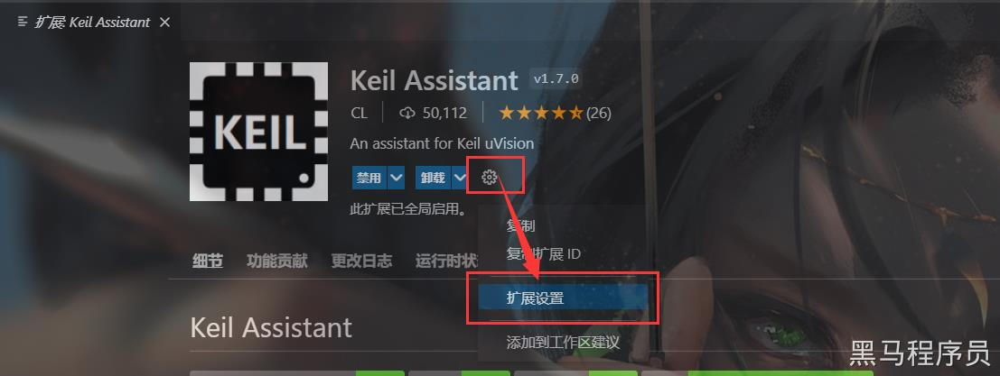</p><p data-lake-id="u064aec64" id="u064aec64"><span data-lake-id="u3ad84f32" id="u3ad84f32">把keil的UVx.exe的路径复制到红色方框中，通常是</span><code data-lake-id="u52526eb3" id="u52526eb3"><span data-lake-id="uea8c2998" id="uea8c2998">D:\Keil_v5\UV4\UV4.exe</span></code></p><p data-lake-id="ud400b8b9" id="ud400b8b9">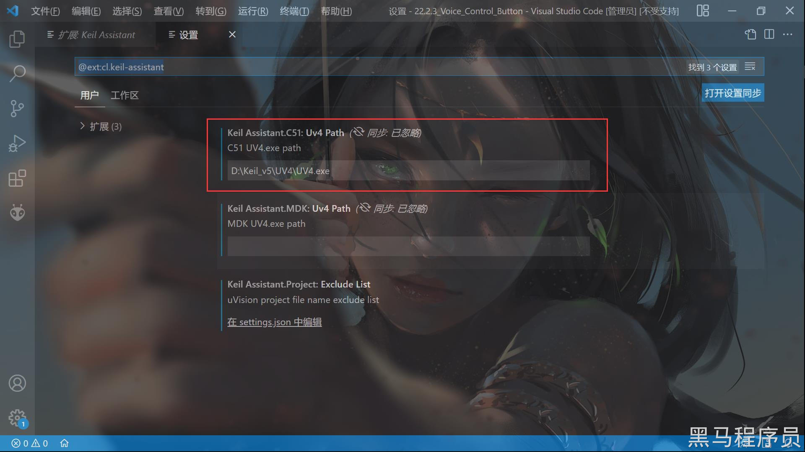<span class="lake-fontsize-12" data-lake-id="u284964ca" id="u284964ca"><br/></span><span class="lake-fontsize-12" data-lake-id="uaae08225" id="uaae08225">一般情况下就是配置好了，如果你是一步一步跟着做过来的，建议重启一次电脑，让一些设置生效。</span></p><p data-lake-id="u0715aa7d" id="u0715aa7d"><span class="lake-fontsize-12" data-lake-id="uf92ffce0" id="uf92ffce0">​</span><br/></p><h2 data-lake-id="unqks" id="unqks"><span class="lake-fontsize-12" data-lake-id="ud8f48b52" id="ud8f48b52">4.4 配置文件自动识别编码</span></h2><p data-lake-id="u9e598112" id="u9e598112">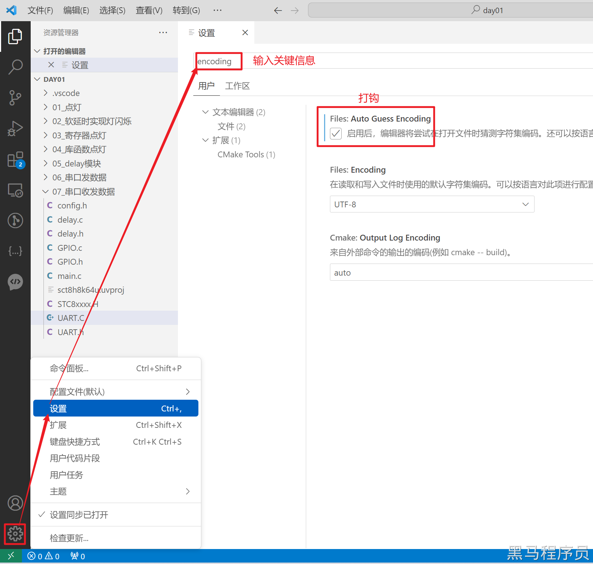</p><h1 data-lake-id="l2Uy6" data-lake-index-type="2" id="l2Uy6"><span data-lake-id="uae9a1b80" id="uae9a1b80">使用教程</span></h1><h2 data-lake-id="SZApk" data-lake-index-type="2" id="SZApk"><span data-lake-id="ub82ec772" id="ub82ec772">新建一个keil工程</span></h2><h2 data-lake-id="jPtZj" data-lake-index-type="2" id="jPtZj"><span data-lake-id="u5fe5a080" id="u5fe5a080">用vs code打开keil工程</span></h2><p data-lake-id="u8f4375e7" id="u8f4375e7">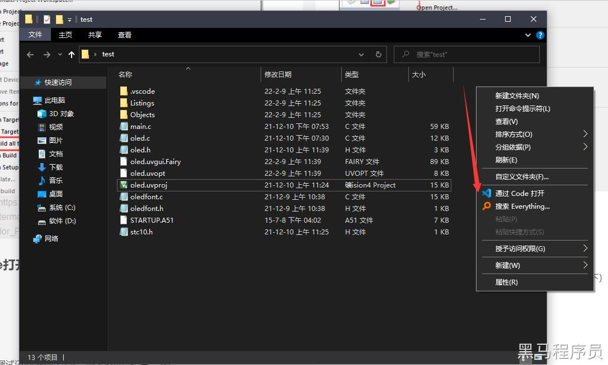<span class="lake-fontsize-12" data-lake-id="uff8beb73" id="uff8beb73"><br/></span><span class="lake-fontsize-12" data-lake-id="u7d56fab6" id="u7d56fab6">在keil工程所在目录下右键，选择【通过code打开】。</span></p><h2 data-lake-id="GIumc" data-lake-index-type="2" id="GIumc"><span data-lake-id="u8c444eee" id="u8c444eee">编译</span></h2><p data-lake-id="u79a3e9ad" id="u79a3e9ad">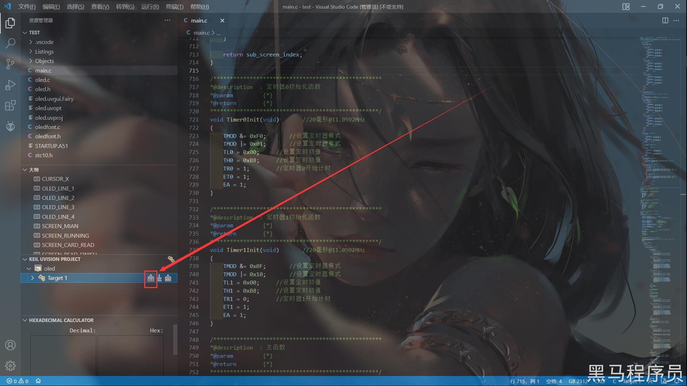<span class="lake-fontsize-12" data-lake-id="u62ddfaa0" id="u62ddfaa0"><br/></span><span class="lake-fontsize-12" data-lake-id="u751e14b3" id="u751e14b3">点击图示按钮即可对keil工程编译，效果：<br/></span>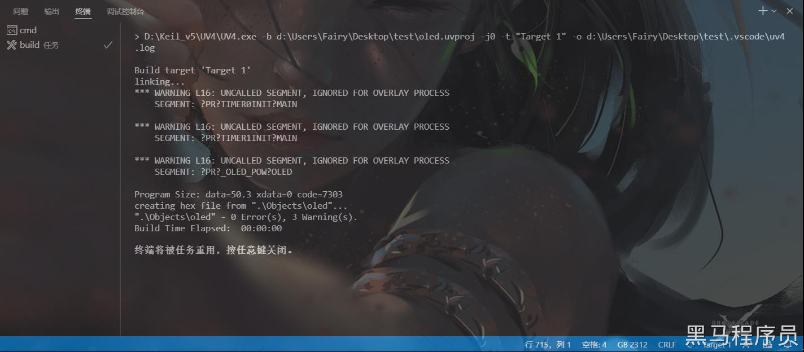</p><p data-lake-id="u176f6b2b" id="u176f6b2b"><span class="lake-fontsize-12" data-lake-id="u2e3a3915" id="u2e3a3915">如果按下编译后弹出如下提示，则需要安装 .NET环境</span></p><p data-lake-id="u1f402e6f" id="u1f402e6f">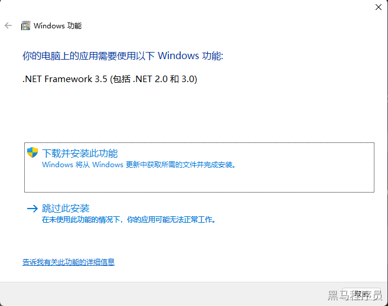</p><p data-lake-id="u3b280c34" id="u3b280c34"><span data-comment-id="33632634" data-lake-id="uc351a791" id="uc351a791">需要到微软官网下载.NET 3.5支持包并安装：</span><a data-lake-id="u96fa0ceb" href="https://www.microsoft.com/zh-CN/download/details.aspx?id=25150" id="u96fa0ceb" rel="noopener noreferrer" target="_blank"><span data-comment-id="33632634" data-lake-id="ue024c5b2" id="ue024c5b2">https://www.microsoft.com/zh-CN/download/details.aspx?id=25150</span></a></p><p data-lake-id="ua5f0e4d5" id="ua5f0e4d5"><span data-lake-id="ub9fbf78b" id="ub9fbf78b">安装后，重新打开VSCode</span></p><h1 data-lake-id="AZGfb" data-lake-index-type="2" id="AZGfb"><span data-lake-id="ub25e4123" id="ub25e4123">问题及解决</span></h1><h2 data-lake-id="ok3OR" data-lake-index-type="2" id="ok3OR"><span data-lake-id="u5afcbcd1" id="u5afcbcd1">解决智能提示和跳转</span></h2><p data-lake-id="u1bfb9c00" id="u1bfb9c00">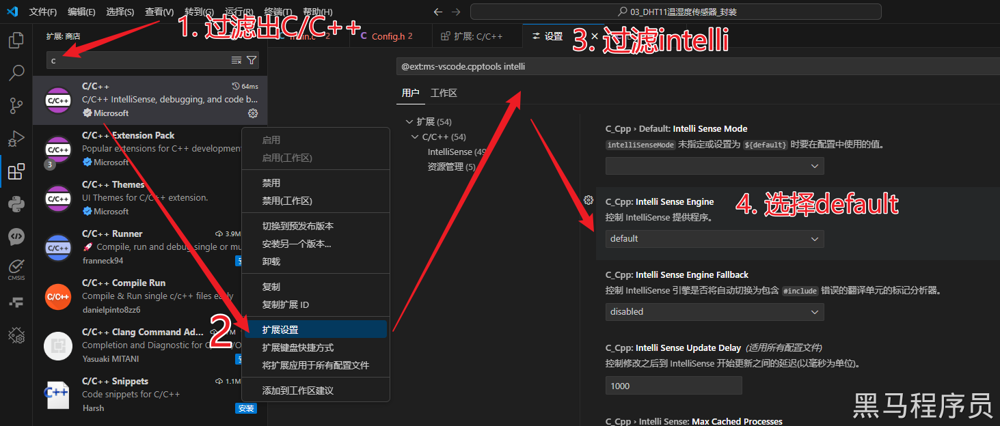</p><h2 data-lake-id="KHBMY" data-lake-index-type="2" id="KHBMY"><span data-lake-id="ucfc426a2" id="ucfc426a2">红色波浪线</span></h2><p data-lake-id="u8b606add" id="u8b606add"><span data-lake-id="u7c0c2fd0" id="u7c0c2fd0">如果出现如下波浪线错误，导致不能进行文件跳转，可以按下快捷键</span><code data-lake-id="u43c4edc9" id="u43c4edc9"><span data-lake-id="uf25a0d27" id="uf25a0d27">F1</span></code><span data-lake-id="uf4de83f3" id="uf4de83f3">或</span><code data-lake-id="u39ca79b5" id="u39ca79b5"><span data-lake-id="ude272db2" id="ude272db2">Ctrl + Shift + P</span></code><span data-lake-id="u25da66be" id="u25da66be">搜索关键字 </span><code data-lake-id="u49da4049" id="u49da4049"><span data-lake-id="uabd01eca" id="uabd01eca">CUI</span></code></p><p data-lake-id="u5568b900" id="u5568b900">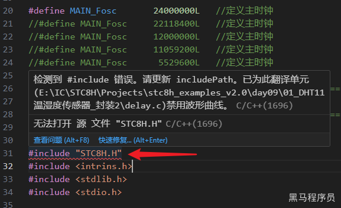</p><p data-lake-id="uddc0b22d" id="uddc0b22d"><span data-comment-id="35492921" data-lake-id="u97890065" id="u97890065">搜索关键字 </span><code data-lake-id="ue28c6138" id="ue28c6138"><span data-comment-id="35492921" data-lake-id="u337d2120" id="u337d2120">CUI</span></code></p><p data-lake-id="u023ce1f3" id="u023ce1f3">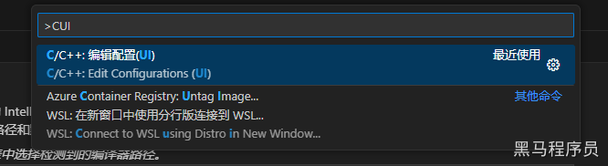</p><p data-lake-id="u933ee68a" id="u933ee68a"><span data-lake-id="uc6af6654" id="uc6af6654">打开配置，保证</span><code data-lake-id="u7dbc363c" id="u7dbc363c"><span data-lake-id="u60778f22" id="u60778f22">包含路径(IncludePath)</span></code><span data-lake-id="u5ae30af4" id="u5ae30af4">中，有如下三个路径即可：</span></p><ol list="u2ca174bc"><li data-lake-id="ue2e92960" fid="u562eecb4" id="ue2e92960"><span data-lake-id="u3281c6b6" id="u3281c6b6">C51的</span><code data-lake-id="u15be9563" id="u15be9563"><span data-lake-id="uce42e367" id="uce42e367">INC</span></code><span data-lake-id="ue0739a70" id="ue0739a70">路径：</span><code data-lake-id="ubd0891e5" id="ubd0891e5"><span data-lake-id="u34a84e60" id="u34a84e60">D:\Keil_v5\C51\INC</span></code></li><li data-lake-id="u44f2d4f0" fid="u562eecb4" id="u44f2d4f0"><span data-lake-id="ua295883f" id="ua295883f">C51的</span><code data-lake-id="ua592b3c0" id="ua592b3c0"><span data-lake-id="u02943313" id="u02943313">INC/STC</span></code><span data-lake-id="u613d8e9e" id="u613d8e9e">路径：</span><code data-lake-id="u2dadb6f1" id="u2dadb6f1"><span data-lake-id="uc6851e55" id="uc6851e55">D:\Keil_v5\C51\INC\STC</span></code></li><li data-lake-id="ueaf3dda1" fid="u562eecb4" id="ueaf3dda1"><span data-lake-id="ua14adfff" id="ua14adfff">工程路径：输入</span><code data-lake-id="u55e0252f" id="u55e0252f"><span data-lake-id="ufc6e7f71" id="ufc6e7f71">${workspaceFolder}</span></code><span data-lake-id="u27861bd7" id="u27861bd7">即可，会自动转换为当前工程的真实路径</span></li></ol><p data-lake-id="u6a8d38ac" id="u6a8d38ac"><span data-lake-id="u3fedd525" id="u3fedd525">以上1,2路径注意是你自己的</span><code data-lake-id="u6da5a53a" id="u6da5a53a"><span data-lake-id="u2d35a085" id="u2d35a085">Keil_v5</span></code><span data-lake-id="u783e96e4" id="u783e96e4">安装的路径，目的是让编译器能够找到这些报错的头文件所在的目录。</span></p><p data-lake-id="u7206034e" id="u7206034e"><span data-lake-id="u3170a07f" id="u3170a07f">即复制如下内容，一定要修改成自己的Keil路径，保证1和2能在文件管理器里打得开：</span></p><span class="yuque-card-unsupported">[codeblock]</span><p data-lake-id="u6434c654" id="u6434c654">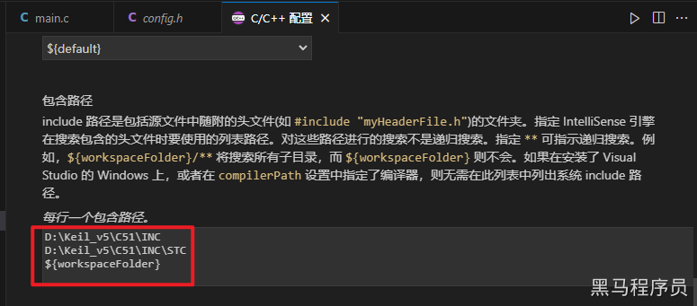</p><h1 data-lake-id="k3E7R" data-lake-index-type="2" id="k3E7R"><span data-lake-id="uc759c099" id="uc759c099">其他推荐</span></h1><h2 data-lake-id="HOVzP" data-lake-index-type="2" id="HOVzP"><span data-lake-id="uc643edd7" id="uc643edd7">AI代码搜索插件</span></h2><p data-lake-id="u9af9bd20" id="u9af9bd20"><code data-lake-id="u23e851be" id="u23e851be"><span data-lake-id="uc1a7c32b" id="uc1a7c32b">bito</span></code><span data-lake-id="u00cd7417" id="u00cd7417">官网：</span><a data-lake-id="u3ed8d534" href="https://bito.ai/" id="u3ed8d534" rel="noopener noreferrer" target="_blank"><span data-lake-id="ue0e4d4ac" id="ue0e4d4ac">https://bito.ai/</span></a></p><p data-lake-id="ue7c98876" id="ue7c98876"></p><h2 data-lake-id="Mummg" data-lake-index-type="2" id="Mummg"><span data-lake-id="u053aab69" id="u053aab69">AI代码提示插件</span></h2><p data-lake-id="u461eefd8" id="u461eefd8"><code data-lake-id="u4c19b30b" id="u4c19b30b"><span data-lake-id="u4e469a80" id="u4e469a80">fittencode</span></code><span data-lake-id="u45236a3d" id="u45236a3d"> 官网：</span><a data-lake-id="u8eba757b" href="http://code.fittentech.com/" id="u8eba757b" rel="noopener noreferrer" target="_blank"><span data-lake-id="ud58ac840" id="ud58ac840">http://code.fittentech.com/</span></a></p><p data-lake-id="uf6d09e42" id="uf6d09e42"><code data-lake-id="uc918055b" id="uc918055b"><span data-lake-id="ubd85693c" id="ubd85693c">TONGYI Lingma</span></code><span data-lake-id="u531a9a1e" id="u531a9a1e"> 官网：</span><a data-lake-id="ua4fb986b" href="https://tongyi.aliyun.com/lingma" id="ua4fb986b" rel="noopener noreferrer" target="_blank"><span data-lake-id="u299bddd8" id="u299bddd8">https://tongyi.aliyun.com/lingma</span></a></p><p data-lake-id="u69663c60" id="u69663c60"><code data-lake-id="u9a71bd3c" id="u9a71bd3c"><span data-lake-id="uf4bcd65a" id="uf4bcd65a">codeium</span></code><span data-lake-id="ue7bd2e5e" id="ue7bd2e5e">官网：</span><a data-lake-id="ua7c8b621" href="https://codeium.com/" id="ua7c8b621" rel="noopener noreferrer" target="_blank"><span data-lake-id="ue9ff67f5" id="ue9ff67f5">https://codeium.com/</span></a></p><p data-lake-id="uc8390a73" id="uc8390a73"><code data-lake-id="ue859bdda" id="ue859bdda"><span data-lake-id="u5403de0d" id="u5403de0d">copilot</span></code><span data-lake-id="u91557c5f" id="u91557c5f">（付费）</span></p><p data-lake-id="udae65623" id="udae65623">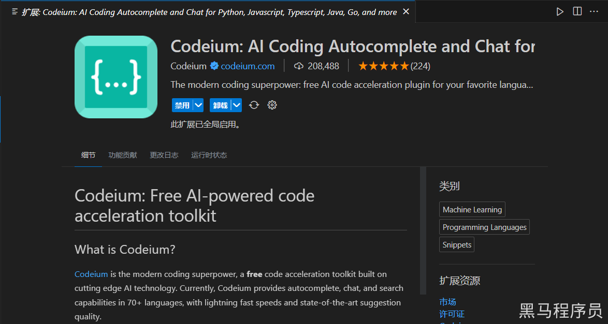</p><p data-lake-id="u7c675dbe" id="u7c675dbe"><br/></p><h2 data-lake-id="RQrhV" data-lake-index-type="2" id="RQrhV"><span data-lake-id="u7a8ae56f" id="u7a8ae56f">注释助手</span></h2><p data-lake-id="u81999811" id="u81999811"><code data-lake-id="ud6a1ac0d" id="ud6a1ac0d"><span data-lake-id="u11535530" id="u11535530">Doxygen Documentation Generator</span></code><span data-lake-id="u9123b4b4" id="u9123b4b4">帮我们快速生成函数注释</span></p><p data-lake-id="u0e91f332" id="u0e91f332">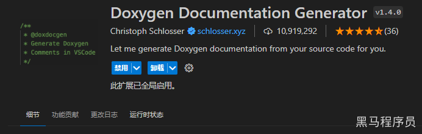</p><h2 data-lake-id="BBfyt" data-lake-index-type="2" id="BBfyt"><span data-lake-id="u8f2c17a0" id="u8f2c17a0">注释自动翻译</span></h2><p data-lake-id="u60b94970" id="u60b94970"><span data-lake-id="ua8c064e8" id="ua8c064e8">插件名称：Comment Translate</span></p><p data-lake-id="u3b4aa585" id="u3b4aa585">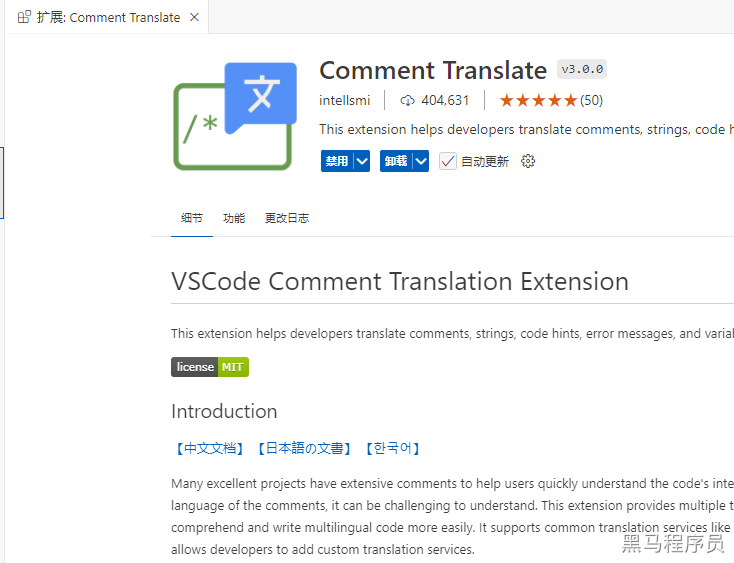</p><p data-lake-id="u1bddc2c5" id="u1bddc2c5"><span data-lake-id="u7dbbf685" id="u7dbbf685">可以自动翻译API库函数里的所有注释，并不影响原先代码（也可以进行替换），建议配置aliyun的密钥，申请方式如下链接：</span><a data-lake-id="u249464c1" href="https://bobtranslate.com/service/translate/ali.html" id="u249464c1" rel="noopener noreferrer" target="_blank"><span data-lake-id="u185a7b9f" id="u185a7b9f">阿里翻译 | Bob (bobtranslate.com)</span></a></p><p data-lake-id="u19f01a10" id="u19f01a10"><span data-lake-id="u4529df5a" id="u4529df5a">在插件设置里，配置这两个参数即可：</span></p><p data-lake-id="u6e5182ef" id="u6e5182ef">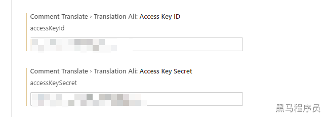</p><p data-lake-id="ub1c69665" id="ub1c69665"><span data-lake-id="ueb1aada2" id="ueb1aada2">​</span><br/></p><p data-lake-id="uec08c90d" id="uec08c90d"><span data-lake-id="uaf0d0ece" id="uaf0d0ece">效果如下：</span></p><p data-lake-id="uaca0b1e5" id="uaca0b1e5">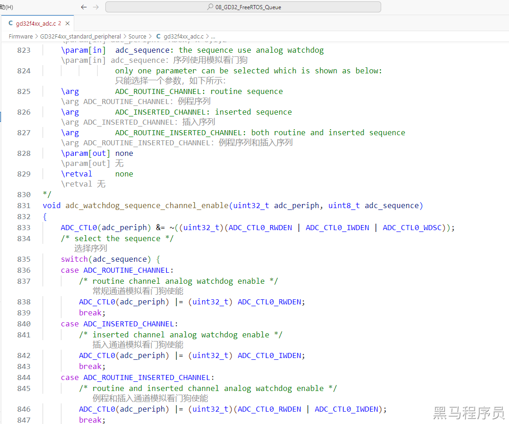</p><p data-lake-id="u4b55847f" id="u4b55847f"><br/></p>